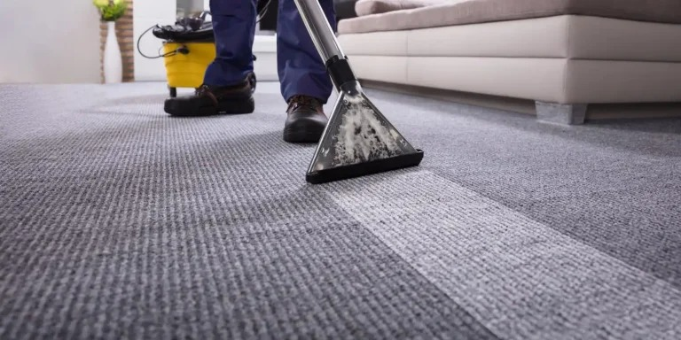

Professional Carpet & Rug Cleaning in Cape Town
Restore the vibrancy, softness, and hygienic freshness of your wall-to-wall carpets, Persian rugs, and commercial flooring. Our industrial hot water injection-extraction technology removes compacted grit, spills, pet dander, and allergens with fast drying.
Deep Cleaning For Every Carpet Type
We handle wall-to-wall fitted carpets in residential homes, offices, rental properties, and delicate area rugs.
Wall-to-Wall Fitted Carpets
Thorough extraction across bedrooms, living areas, stairways, and corridors, removing trapped soil from deep beneath carpet pile.
Area Rugs & Runners
Delicate care for wool rugs, shaggy rugs, and hall runners, restoring bright patterns without causing colour bleed or fringe damage.
Allergen & Dust Mite Defense
Sanitising extraction eliminates microscopic dust mites, pollen, pet dander, and bacteria, dramatically improving indoor air quality.
Rapid Drying (3–5 Hours)
High-powered vacuum motors extract up to 85% of applied moisture, leaving carpets damp to the touch and fully dry in just a few hours.
Why Deep Extraction Beats Basic Vacuuming
Household vacuums only remove surface particles. Over time, sharp sand particles and grease grind into the backing of your carpet, slicing through delicate pile filaments and accelerating wear. Our industrial injection flushes clean fluid into the pile and immediately extracts abrasive grit, restoring softness and extending carpet lifespan.
-
Removes darkened foot-traffic lanes in corridors and doorways -
Safe, non-toxic eco detergents safe for babies crawling on carpets -
Ideal for move-in and move-out tenancy deposit returns -
Eliminates stubborn pet urine and biological odours

Our Carpet Cleaning Process
Systematic, thorough care that protects carpet backings while delivering pristine results.
Pre-Inspection
We assess carpet pile material, check high-traffic friction areas, and identify spot stains to determine the optimal cleaning approach.
Dry Soil Loosening
Industrial agitation and dry suction extract dry sand, micro-grit, and surface hair before water is introduced.
Conditioning Pre-Spray
Eco-friendly emulsifying solutions break the bond between greasy dirt, spills, and carpet filaments.
Hot Water Extraction
Clean solution flushes the weave under controlled pressure while high-powered vacuum shoes immediately pull grime away.
Pile Reset & Final Check
Carpet pile is gently groomed in one uniform direction to facilitate even airflow and accelerated 3–5 hour drying.
Client Satisfaction Across Cape Town
Read why clients choose Quinton Chinoz Projects for their carpet and floor care.
"The work done by this team is absolutely outstanding. Prices are competitive, working relationship is excellent and trustworthiness is unbelievable. I moved out of my home for 4 days and left it for the team to work in. Came back to a palace. I would recommend this group for any job that they can offer."
"One call✔️ Arrived 30mins before time✔️ Thorough job✔️ Professional✔️ Affordable✔️ Very friendly✔️ Efficient✔️ Cleaned after they finished✔️ I will recommend Ernest and his team to anyone, they are the best I've seen👌🏿"
"Absolutely will recommend Quinton Chinoz Projects. They are friendly, helpful and absolutely get the job done!! I'm so impressed with their services. I will recommend them to my family and friends."
Frequently Asked Questions
Common questions regarding our carpet and rug cleaning services.
How long do carpets take to dry after deep cleaning?
Most carpets dry within 3 to 5 hours. Our high-power extraction machinery removes the vast majority of water during the cleaning pass so carpets are never left soggy or waterlogged.
Can you remove old, dried-in stains and pet accidents?
Yes. We use specialized enzyme pre-treatments for biological spills, tea, coffee, wine, and grease. While fibers that have experienced permanent chemical fiber bleaching cannot be re-dyed, our steam extraction removes the overwhelming majority of set-in dirt and neutralizes bad odours.
How often should home carpets be professionally deep cleaned?
For standard households, professional deep cleaning is recommended every 12 months. For homes with pets, young children, or allergy sufferers, having carpets deep cleaned every 6 months prevents allergen buildup and preserves fiber freshness.
How do I get an accurate carpet cleaning quote?
Simply tell us the number of rooms, approximate carpet sizes, or send photos of your carpets via WhatsApp at 067 735 2364. We will provide an instant, transparent quote with zero hidden fees.
Ready for Cleaner, Softer Carpets?
Book your carpet deep clean today with Quinton Chinoz Projects. Serving Kraaifontein, Durbanville, Brackenfell, and Greater Cape Town.